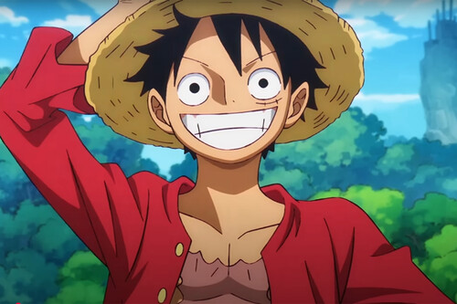
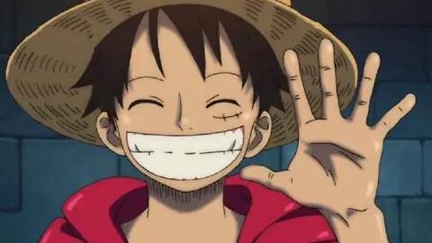
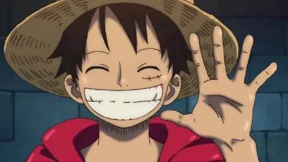

Monkey D. Luffy
 

Monkey D. Luffy es el protagonista del manga y anime One Piece, creado por Eiichiro Oda. Nacido en la aldea Foosha, sueña con convertirse en el Rey de los Piratas. Tras comer la Fruta Gomu Gomu (realmente la Hito Hito: Modelo Nika), obtiene poderes de goma. Luffy funda y lidera los Piratas del Sombrero de Paja, reclutando a una tripulación diversa en su viaje por la Grand Line. Es conocido por su valentía, sentido de la justicia y determinación inquebrantable. Conquista enemigos poderosos y gana aliados gracias a su carisma. Su meta es encontrar el legendario tesoro, el One Piece.
A lo largo de su viaje, Luffy ha enfrentado a enemigos como Crocodile, Doflamingo, y Kaido, demostrando un crecimiento impresionante tanto en fuerza como en liderazgo. Su habilidad para despertar el Gear Fifth lo convierte en uno de los personajes más poderosos del mundo de One Piece.
Además de su fuerza, Luffy es muy querido por su personalidad alegre, inocente y determinada. Siempre está dispuesto a arriesgar su vida por sus amigos y tiene un fuerte sentido de la libertad, que es el núcleo de su sueño como pirata.